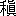

編輯者 支那へ旅行するそうですね。南ですか？ 北ですか？
小説家 南から北へ
周るつもりです。
編輯者 準備はもう出来たのですか？
小説家
大抵出来ました。ただ読む筈だった紀行や地誌なぞが、未だに読み切れないのに弱っています。
編輯者 （気がなさそうに）そんな本が何冊もあるのですか？
小説家 存外ありますよ。日本人が書いたのでは、七十八日遊記、支那文明記、支那漫遊記、支那仏教遺物、支那風俗、支那人気質、
燕山楚水、
蘇浙小観、
北清見聞録、
長江十年、観光紀游、
征塵録、満洲、
巴蜀、
湖南、
漢口、
支那風韻記、支那――
編輯者 それをみんな読んだのですか？
小説家 何、まだ一冊も読まないのです。それから支那人が書いた本では、
大清一統志、
燕都遊覧志、
長安客話、
帝京――
編輯者 いや、もう本の名は沢山です。
小説家 まだ西洋人が書いた本は、一冊も云わなかったと思いますが、――
編輯者 西洋人の書いた支那の本なぞには、どうせ
碌な物はないでしょう。それより小説は出発
前に、きっと書いて貰えるでしょうね。
小説家 （急に
悄気る）さあ、とにかくその前には、書き上げるつもりでいるのですが、――
編輯者 一体
何時出発する予定ですか？
小説家 実は
今日出発する予定なのです。
編輯者 （驚いたように）今日ですか？
小説家 ええ、五時の急行に乗る筈なのです。
編輯者 するともう出発前には、半時間しかないじゃありませんか？
小説家 まあそう云う
勘定です。
編輯者 （腹を立てたように）では小説はどうなるのですか？
小説家 （いよいよ
悄気る）僕もどうなるかと思っているのです。
編輯者 どうもそう無責任では困りますなあ。しかし何しろ半時間ばかりでは、急に書いても貰えないでしょうし、………
小説家 そうですね。ウェデキンドの芝居だと、この半時間ばかりの
間にも、不遇の音楽家が飛びこんで来たり、どこかの奥さんが自殺したり、いろいろな事件が起るのですが、――御待ちなさいよ。事によると机の
抽斗に、まだ何か発表しない原稿があるかも知れません。
編輯者 そうすると非常に好都合ですが――
小説家 （机の抽斗を探しながら）論文ではいけないでしょうね。
編輯者 何と云う論文ですか？
小説家 「文芸に及ぼすジャアナリズムの害毒」と云うのです。
編輯者 そんな論文はいけません。
小説家 これはどうですか？ まあ、体裁の上では
小品ですが、――
編輯者 「
奇遇」と云う題ですね。どんな事を書いたのですか？
小説家 ちょいと読んで見ましょうか？ 二十分ばかりかかれば読めますから、――
× × ×
至順年間の事である。
長江に臨んだ
古金陵の地に、
王生と云う青年があった。生れつき才力が豊な上に、
容貌もまた美しい。何でも
奇俊王家郎と称されたと云うから、その
風采想うべしである。しかも年は
二十になったが、妻はまだ
娶っていない。家は
門地も正しいし、親譲りの資産も相当にある。詩酒の風流を
恣にするには、こんな
都合の
好い身分はない。
実際また王生は、仲の
好い友人の
趙生と一しょに、自由な生活を送っていた。
戯を
聴きに行く事もある。
博を打って暮らす事もある。あるいはまた一晩中、
秦淮あたりの
酒家の
卓子に、酒を飲み明かすことなぞもある。そう云う時には落着いた王生が、
花磁盞を前にうっとりと、どこかの歌の声に聞き入っていると、陽気な趙生は
酢蟹を肴に、
金華酒の
満を引きながら、盛んに
妓品なぞを論じ立てるのである。
その王生がどう云う訳か、去年の秋以来忘れたように、ばったり痛飲を試みなくなった。いや、痛飲ばかりではない。
吃喝嫖賭の道楽にも、全然遠のいてしまったのである。趙生を始め大勢の友人たちは、勿論この変化を不思議に思った。王生ももう道楽には、飽きたのかも知れないと云うものがある。いや、どこかに可愛い女が、出来たのだろうと云うものもある。が、
肝腎の王生自身は、何度その訳を尋ねられても、ただ微笑を洩らすばかりで、何がどうしたとも返事をしない。
そんな事が一年ほど続いた
後、ある日趙生が久しぶりに、王生の家を訪れると、彼は
昨夜作ったと云って、
元体の
会真詩三十韻を出して見せた。詩は花やかな
対句の中に、絶えず
嗟嘆の意が洩らしてある。恋をしている青年でもなければ、こう云う詩はたとい
一行でも、書く事が出来ないに違いない。趙生は詩稿を王生に返すと、
狡猾そうにちらりと相手を見ながら、
「君の
鶯鶯はどこにいるのだ。」と云った。
「僕の
鶯鶯？ そんなものがあるものか。」
「嘘をつき給え。論より証拠はその指環じゃないか。」
なるほど
趙生が指さした
几の上には、
紫金碧甸の指環が一つ、読みさした本の上に転がっている。指環の主は勿論男ではない。が、
王生はそれを取り上げると、ちょいと顔を暗くしたが、しかし存外平然と、
徐ろにこんな話をし出した。
「僕の鶯鶯なぞと云うものはない。が、僕の恋をしている女はある。僕が去年の秋以来、君たちと
太白を挙げなくなったのは、確かにその女が出来たからだ。しかしその女と僕との関係は、君たちが想像しているような、ありふれた才子の情事ではない。こう云ったばかりでは何の事だか、勿論君にはのみこめないだろう。いや、のみこめないばかりなら
好いが、あるいは万事が嘘のような疑いを抱きたくなるかも知れない。それでは僕も不本意だから、この際君に一切の事情をすっかり打ち明けてしまおうと思う。退屈でもどうか一通り、その女の話を聞いてくれ給え。
「僕は君が知っている通り、
松江に田を持っている。そうして毎年秋になると、一年の
年貢を取り立てるために、僕自身あそこへ
下って行く。所がちょうど去年の秋、やはり松江へ下った帰りに、舟が
渭塘のほとりまで来ると、柳や
槐に囲まれながら、
酒旗を出した家が一軒見える。朱塗りの
欄干が
画いたように、折れ曲っている
容子なぞでは、中々大きな構えらしい。そのまた欄干の続いた外には、紅い
芙蓉が
何十株も、川の水に影を落している。僕は
喉が
渇いていたから、早速その酒旗の出ている家へ、舟をつけろと云いつけたものだ。
「さてそこへ
上って見ると、
案の
定家も手広ければ、
主の
翁も卑しくない。その上酒は
竹葉青、
肴は
鱸に
蟹と云うのだから、僕の満足は察してくれ給え。実際僕は久しぶりに、
旅愁も何も忘れながら、
陶然と
盃を口にしていた。その内にふと気がつくと、
誰か一人幕の陰から、時々こちらを
覗くものがある。が、僕はそちらを見るが早いか、すぐに幕の
後へ隠れてしまう。そうして僕が眼を
外らせば、じっとまたこちらを見つめている。何だか
翡翠の
簪や金の
耳環が幕の
間に、ちらめくような気がするが、確かにそうかどうか判然しない。現に一度なぞは玉のような顔が、ちらりとそこに見えたように思う。が、急にふり返ると、やはりただ幕ばかりが、
懶そうにだらりと
下っている。そんな事を
繰り返している内に、僕はだんだん酒を飲むのが、妙につまらなくなって来たから、何枚かの
銭を
抛り出すと、
 々
々また舟へ帰って来た。
「ところがその晩舟の中に、独りうとうとと眠っていると、僕は夢にもう一度、あの酒旗の出ている
家へ行った。昼来た時には知らなかったが、
家には門が
何重もある、その門を皆通り抜けた、一番奥まった
家の
後に、小さな
綉閣が一軒見える。その前には見事な
葡萄棚があり、葡萄棚の下には石を
畳んだ、一丈ばかりの泉水がある。僕はその池のほとりへ来た時、水の中の金魚が月の光に、はっきり数えられたのも覚えている。池の左右に植わっているのは、
二株とも
垂糸檜に違いない。それからまた
墻に寄せては、
翠柏の
屏が結んである。その下にあるのは天工のように、石を積んだ
築山である。築山の草はことごとく
金糸線綉
の
属ばかりだから、この頃のうそ
寒にも
凋れていない。窓の間には
彫花の
籠に、緑色の
鸚鵡が飼ってある。その鸚鵡が僕を見ると、「今晩は」と云ったのも忘れられない。軒の下には宙に
吊った、小さな
木鶴の
一双いが、煙の立つ線香を
啣えている。窓の中を覗いて見ると、
几の上の
古銅瓶に、
孔雀の尾が何本も
挿してある。その側にある
筆硯類は、いずれも
清楚と云うほかはない。と思うとまた人を待つように、碧玉の
簫などもかかっている。壁には
四幅の
金花箋を貼って、その上に詩が題してある。詩体はどうも
蘇東坡の
四時の
詞に
傚ったものらしい。書は確かに
趙松雪を学んだと思う筆法である。その詩も一々覚えているが、今は
披露する必要もあるまい。それより君に聞いて貰いたいのは、そう云う月明りの部屋の中に、たった一人坐っていた、
玉人のような女の事だ。僕はその女を見た時ほど、女の美しさを感じた事はない。」
「
有美閨房秀 天人謫降来かね。」
趙生は微笑しながら、さっき
王生が見せた
会真詩の冒頭の二句を口ずさんだ。
「まあ、そんなものだ。」
話したいと云った癖に、王生はそう答えたぎり、いつまでも口を
噤んでいる。趙生はとうとう待兼ねたように、そっと王生の膝を突いた。
「それからどうしたのだ？」
「それから一しょに話をした。」
「話をしてから？」
「女が
玉簫を吹いて聞かせた。
曲は
落梅風だったと思うが、――」
「それぎりかい？」
「それがすむとまた話をした。」
「それから？」
「それから急に眼がさめた。眼がさめて見るとさっきの通り、僕は舟の中に眠っている。
艙の外は見渡す限り、茫々とした
月夜の水ばかりだ。その時の寂しさは話した所が、天下にわかるものは一人もあるまい。
「それ以来僕の心の
中では、始終あの女の事を思っている。するとまた
金陵へ帰ってからも、不思議に毎晩眠りさえすれば、必ずあの
家が夢に見える。しかも
一昨日の晩なぞは、僕が女に
水晶の
双魚の
扇墜を贈ったら、女は僕に
紫金碧甸の指環を抜いて渡してくれた。と思って眼がさめると、扇墜が見えなくなった代りに、いつか僕の枕もとには、この指環が一つ抜き捨ててある。してみれば女に
遇っているのは、全然夢とばかりも思われない。が、夢でなければ何だと云うと、――僕も答を失してしまう。
「もし仮に夢だとすれば、僕は夢に見るよりほかに、あの
家の娘を見たことはない。いや、娘がいるかどうか、それさえはっきりとは知らずにいる。が、たといその娘が、実際はこの世にいないのにしても、僕が彼女を思う心は、変る時があるとは考えられない。僕は僕の生きている限り、あの池だの
葡萄棚だの緑色の
鸚鵡だのと一しょに、やはり夢に見る娘の姿を懐しがらずにはいられまいと思う。僕の話と云うのは、これだけなのだ。」
「なるほど、ありふれた才子の情事ではない。」
趙生は半ば
憐むように、
王生の顔へ眼をやった。
「それでは君はそれ以来、一度もその
家へは行かないのかい。」
「うん。一度も行った事はない。が、もう十日ばかりすると、また
松江へ
下る事になっている。その時
渭塘を通ったら、是非あの
酒旗の出ている家へ、もう一度舟を寄せて見るつもりだ。」
それから実際十日ばかりすると、王生は例の通り舟を
艤して、
川下の松江へ下って行った。そうして彼が帰って来た時には、――趙生を始め大勢の友人たちは、彼と一しょに舟を
上った少女の美しいのに驚かされた。少女は実際部屋の窓に、緑色の
鸚鵡を飼いながら、これも去年の秋
幕の
陰から、そっと
隙見をした王生の姿を、絶えず夢に見ていたそうである。
「不思議な事もあればあるものだ。何しろ先方でもいつのまにか、水晶の双魚の扇墜が、枕もとにあったと云うのだから、――」
趙生はこう遇う
人毎に、王生の話を
吹聴した。最後にその話が伝わったのは、
銭塘の文人
瞿祐である。瞿祐はすぐにこの話から、美しい
渭塘奇遇記を書いた。……
× × ×
小説家 どうです、こんな調子では？
編輯者 ロマンティクな所は
好いようです。とにかくその
小品を貰う事にしましょう。
小説家 待って下さい。まだ
後が少し残っているのです。ええと、美しい
渭塘奇遇記を書いた。――ここまでですね。
× × ×
しかし
銭塘の
瞿祐は勿論、
趙生なぞの友人たちも、
王生夫婦を
載せた舟が、
渭塘の
酒家を離れた時、彼が少女と交換した、
下のような会話を知らなかった。
「やっと芝居が無事にすんだね。おれはお前の
阿父さんに、毎晩お前の夢を見ると云う、小説じみた嘘をつきながら、何度
冷々したかわからないぜ。」
「
私もそれは心配でしたわ。あなたは
金陵の御友だちにも、やっぱり嘘をおつきなすったの。」
「ああ、やっぱり嘘をついたよ。始めは何とも云わなかったのだが、ふと友達にこの
指環を見つけられたものだから、やむを得ず阿父さんに話す筈の、夢の話をしてしまったのさ。」
「ではほんとうの事を知っているのは、一人もほかにはない訳ですわね。去年の秋あなたが私の部屋へ、忍んでいらしった事を知っているのは、――」
「私。私。」
二人は声のした方へ、同時に驚いた眼をやった。そうしてすぐに笑い出した。
帆檣に吊った
彫花の籠には、緑色の
鸚鵡が賢そうに、王生と少女とを見下している。…………
× × ×
編輯者 それは
蛇足です。折角の読者の感興をぶち壊すようなものじゃありませんか？ この小品が雑誌に載るのだったら、是非とも末段だけは
削って貰います。
小説家 まだ最後ではないのです。もう少し
後があるのですから、まあ、我慢して聞いて下さい。
× × ×
しかし銭塘の瞿祐は勿論、幸福に満ちた王生夫婦も、舟が渭塘を離れた時、少女の父母が交換した、
下のような会話を知らなかった。父母は二人とも
目かげをしながら、
水際の柳や
槐の陰に、その舟を見送っていたのである。
「お婆さん。」
「お爺さん。」
「まずまず無事に芝居もすむし、こんな目出たい事はないね。」
「ほんとうにこんな目出たい事には、もう二度とは
遇えませんね。ただ私は娘や
壻の、苦しそうな嘘を聞いているのが、それはそれは苦労でしたよ。お爺さんは何も知らないように、黙っていろと御云いなすったから、一生懸命にすましていましたが、
今更あんな嘘をつかなくっても、すぐに一しょにはなれるでしょうに、――」
「まあ、そうやかましく云わずにやれ。娘も壻も
極り悪さに、
智慧袋を絞ってついた嘘だ。その上壻の身になれば、ああでも云わぬと、一人娘は、容易にくれまいと思ったかも知れぬ。お婆さん、お前はどうしたと云うのだ。こんな目出たい婚礼に、泣いてばかりいてはすまないじゃないか？」
「お爺さん。お前さんこそ泣いている癖に……」
× × ×
小説家 もう五六枚でおしまいです。
次手に残りも読んで見ましょう。
編輯者 いや、もうその先は沢山です。ちょいとその原稿を貸して下さい。あなたに黙って置くと、だんだん作品が悪くなりそうです。今までも中途で切った方が、
遥に好かったと思いますが、――とにかくこの
小品は貰いますから、そのつもりでいて下さい。
小説家 そこで切られては困るのですが、――
編輯者 おや、もうよほど急がないと、五時の急行には
間に合いませんよ。原稿の事なぞはかまっていずに、早く自動車でも御呼びなさい。
小説家 そうですか。それは大変だ。ではさようなら。
何分よろしく。
編輯者 さようなら、御機嫌好う。
（大正十年三月）